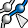
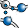
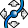
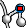
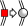

Single viewer: Show either the 2D slice viewer or the 3D viewer.
If this button is pressed repeatedly the currently visible viewer is swapped with the other one
Single viewer: Show either the 2D slice viewer or the 3D viewer.
If this button is pressed repeatedly the currently visible viewer is swapped with the other oneThe Filament Editor has three viewers:
The Filament Editor starts with the 2D slice viewer and the 3D viewer in a side-by-side layout. If no image data is loaded, the default layout is a single viewer. By default, the 2D segment viewer is hidden but the visibility and also the layout of the other viewers can be configured in the viewer toolbar. The 2D segment viewer is always located below the 2D slice and 3D viewer.
Single viewer: Show either the 2D slice viewer or the 3D viewer.
If this button is pressed repeatedly the currently visible viewer is swapped with the other one
 Two viewer side-by-side or stacked:
Show the 2D slice viewer and the 3D viewer side-by-side or stacked
Two viewer side-by-side or stacked:
Show the 2D slice viewer and the 3D viewer side-by-side or stacked
Toggle viewer: Show or hide the 2D segment viewer
There are two basically different navigation modes: Edit and Camera Navigation mode. The two modes can be toggled using the ESC key. If no SpatialGraph object is present, Edit mode is not available and the icons in the viewer toolbar are not selectable. In the 2D slice viewer the Edit mode has three tools: Select single, Move selected node and the interactive tracing tool. In the 3D viewer default edit tool is Select single. Activating another selection tool (e.g., Lasso tool, Select connected) makes this tool the standard selection tool. In Camera Navigation mode Trackball, Translate and Zoom have the corresponding effect in the two viewers. Also, like in the regular 3D viewer, the camera navigation tools are accessible through middle (translate) and middle+left mouse button (zoom). In the 2D segment viewer selection as well as editing are not provided and navigation is only possible by use of the Translate or the Zoom tool.
 Trackball: Rotate the thick slice around selected point or center of slice, if no point is selected
Trackball: Rotate the thick slice around selected point or center of slice, if no point is selected
 Translate: Displace the slice laterally
Translate: Displace the slice laterally
Zoom: Zoom in/out
Home: Change viewer perspective to home (default perspective)
Set Home: Sets a new home perspective
Window level: Adjust data window (center/width). Drag the mouse vertically to move the center of the data window, drag it horizontally to change the width of the data window
Browse slices: Browse through slices in the 2D slice viewer
Trackball: Rotate scene
 Translate: Translate scene
Translate: Translate scene
Zoom: Zoom in/out
 Rotate: Click button to rotate scene around viewer z axis
Rotate: Click button to rotate scene around viewer z axis
Seek: Center and zoom scene to the node or segment which has been clicked
Home: Change camera position to home (default camera)
Set Home: Sets camera to the home position
 Orthographic/Perspective: Toggle between orthographic and perspective camera projection
Orthographic/Perspective: Toggle between orthographic and perspective camera projection
Select single node, segment, or point: Selects a single item. Using Ctrl+Shift the selection is extended to the whole connected component (shortcut: e).
Select a connected component: Selects a segment and all connected segments and nodes (shortcut: w).
 Select subtree: Selects a whole sub-tree, or the shortest path to the root if the Shift key has been pressed. Available only if a root segment has been set, otherwise the tool will be disabled (shortcut: r).
Draw a line to select nodes, segments, and points: Lasso tool. Draw a free-hand contour in the viewer to select items (shortcut: q). Only available in 3D viewer
 Calculate the shortest path between a pair of nodes or segments: Calculates the shortest path between an arbitrary pair of nodes or segments and returns it as selection (shortcut: f)
Select all nodes, segments, and points: Selects all items in the SpatialGraph (shortcut: a).
Clear selection: Deselects any
items (shortcut: c).
Trace filament: Activates the interactive tracing tools (shortcut: T).
 Move selected node: Activates the interactive moving of points including re-tracing of connected edges. In order to move a node, you need to first select it, then click the Move selected node tool and finally click onto the position on the slice where you want to move the point to (only in 2D slice viewer)
Connect selected nodes, segments, or points: Connects selected nodes, segments, or points (shortcut: S). In particular, when 2 nodes are selected, they are connected. When a node and a point are selected, it converts the point to a node and connects them. Otherwise it connects the selection in the following way:
 Remove intermediate nodes, leaving only branching and ending nodes: Joins adjacent segments, if they are separated by a node with two incident segments, i.e., are neither branching nor ending nodes (shortcut: I).
 Convert a selected point into a node: Splits a segment at the selected point. This is useful to remove part of a segment: after the segment has been split at the selected point, the part to be removed can be selected and deleted. The selected point must not be the first or last point on a segment (shortcut: . (period)).
Delete selected nodes, segments, and points: Deletes selected nodes, segments, and points (shortcut: d). Selected nodes will be deleted only if all adjacent segments are selected as well
Undo: Undoes the last edit operation (shortcut: Ctrl+z)
Redo: Redoes the last edit operation (shortcut: Ctrl+y)
The behavior of the three main selection tools Lasso, Select single,
and Select connected may be modified using one of the following modifier keys Shift, Ctrl, Alt, Shift+Ctrl, or
Alt+Ctrl, as described below.
| Lasso tool | Select single node/segment | Select connected component | |
| No modifier | Select all vertices/edges in contour. Deselect everything else. | Select clicked vertex, deselect everything else. | Select connected component while deselecting everything else. |
| Shift | Select all connected components that are completely inside contour. Deselect everything else. | Select clicked connected component while deselecting everything else. | Select clicked vertex while deselecting everything else. |
| Ctrl | Add all vertices/edges inside contour to selection. | Toggles selection of clicked vertex/edge/point while retaining the rest of selection. | Toggles selection of clicked connected component while retaining the rest of selection. |
| Alt | N/A | N/A | N/A |
| Shift+Ctrl | Add all connected components that are completely inside contour to selection. | Toggles selection of clicked connected component while retaining rest of selection. | Toggles selection of clicked vertex/edge/point while retaining the rest of selection. |
| Shift+Alt | N/A | N/A | N/A |